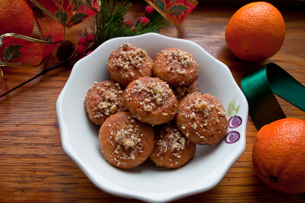

Melomakarona

Description
Melomakarona are one of the most popular treats in Greece during the Christmas holidays with their intense homely smell full of cloves,
cinnamon, and nutmeg.
Ingredients
- 4 cup all-purpose flour
- 2 teaspoon cinnamon
- 1 teaspoon ground cloves
- 1 teaspoon baking soda
- 2 teaspoon baking powder
- 1 pound unsalted butter
- 1 and 3/4 cup sugar
- 3 egg yolks
- 1/2 cup freshly-squeezed orange juice/li>
- 1 teaspoon honey
- 1 cup water
- 1 cup honey for syrup
Steps
- In a large mixing bowl, whisk the flour, spices, baking soda and baking powder.
- Beat the butter until it is light in color and fluffy, about 10 minutes in a stand mixer.
Add the sugar and continue mixing for about 5 more minutes.
- In a separate bowl, beat the egg yolks and orange juice together. Add to the butter mixture
and make sure it is thoroughly incorporated.
- Add dry ingredients in 3 parts, mixing after each addition, then add the teaspoon of honey.
Mix just until a soft dough forms. Chill dough 30 minutes to 1 hour before shaping.
- Shape the dough into small ovals and flatten a little on the cookie sheet. These cookies do spread a little,
so be sure to leave enough room in between. Bake at 350 for about 20 minutes, or until they are lightly golden brown.
- Meanwhile, heat the syrup ingredients over low heat until the sugar is dissolved. Let cool.
- When cookies are cool enough to handle, dip into syrup on both sides for about 10-15 seconds.
Gently press freshly-dipped cookies top side down onto crushed walnuts, then place on wax paper top side up.
Let dry completely before you store.
Home